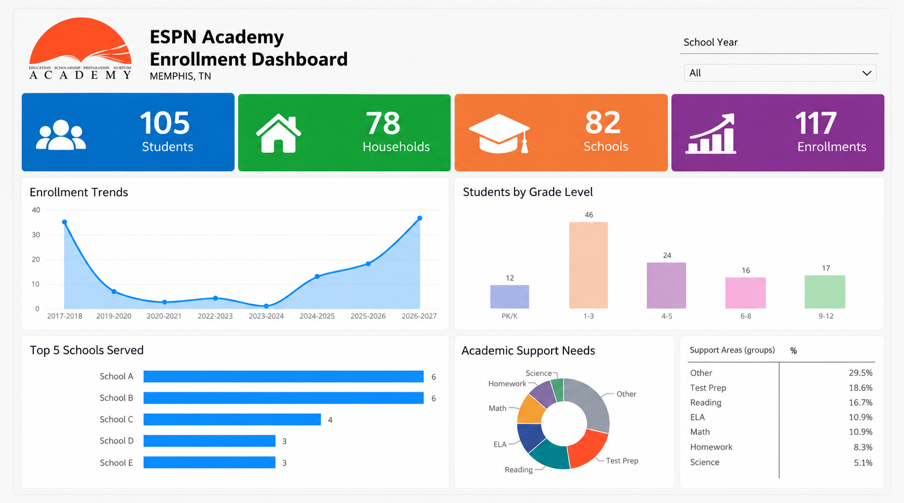

Student
A stable Student ID and demographic attributes.
CASE STUDY · NONPROFIT ANALYTICS · DATA ENGINEERING
From fragmented student registrations to a connected, automated reporting foundation in approximately one month.
For a Memphis-based tutoring organization, I designed a practical data solution that turns registration records into trustworthy enrollment insights—without requiring an expensive technology stack.
01 · THE CHALLENGE
Registration information came from Google Forms and historical paper applications. Repeated submissions, inconsistent household information, missing birthdates, and annual re-enrollments made it difficult to reliably count students or compare school years.
The goal was to build a maintainable data foundation that could support day-to-day operations and a reporting dashboard.
02 · DATA MODEL
A stable Student ID and demographic attributes.
Parent and contact information updated without unnecessary duplicate households.
One record per student and school year, preserving grade, school, age at enrollment, and support needs.
03 · AUTOMATION
Capture registrations
Stage responses
Match identities and update records
Analyze enrollment trends and support needs
04 · REPORTING EXPERIENCE
Track enrollment across school years and examine historical patterns.
Explore students by grade, school, and geographic area.
Understand the most frequently selected support needs to inform program planning.

05 · OUTCOME
Delivered a connected registration-to-reporting workflow, duplicate-prevention logic, a one-time historical cleanup process, and an interactive Power BI enrollment dashboard. The architecture supports continued data quality improvements as the organization grows.
The lesson: An effective analytics solution begins with the data model and the questions stakeholders need answered—not the dashboard itself.
Return to Project Library